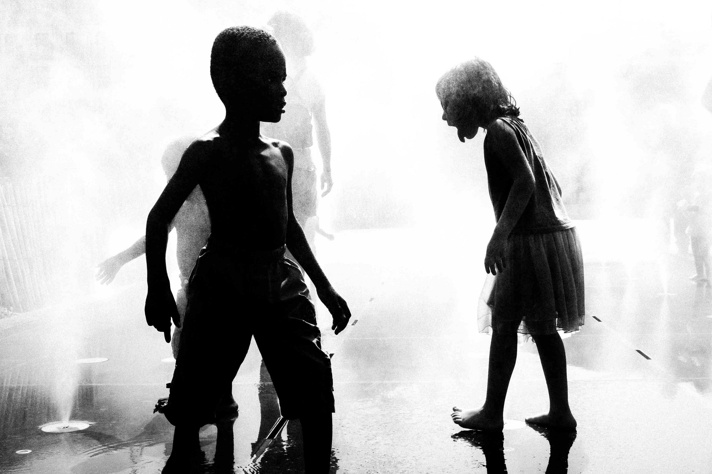
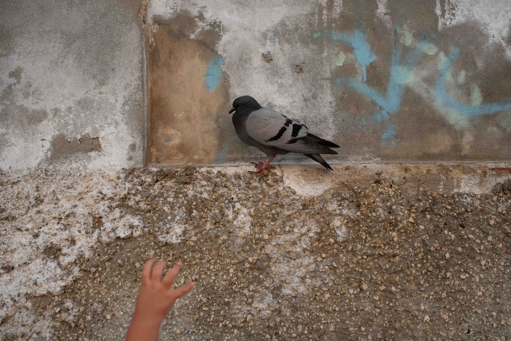
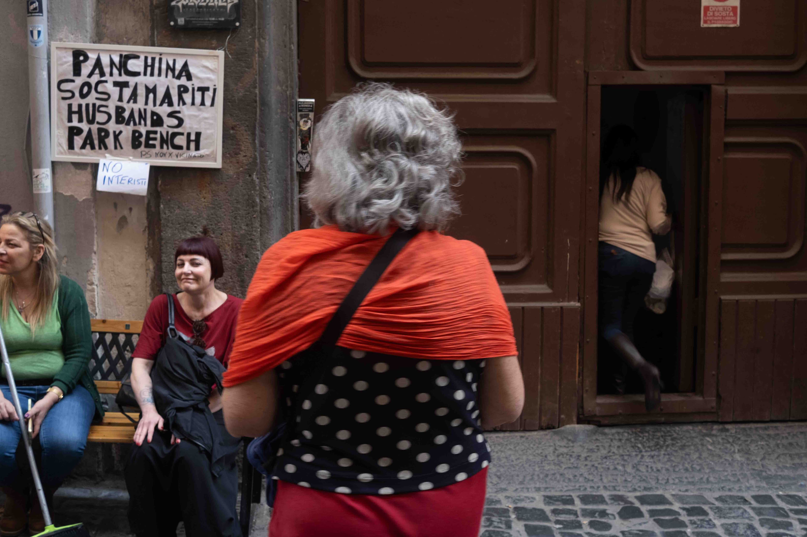

Serie
strade del mondo
Questa serie cattura il mio personale punto di vista su elementi ordinari e allo stesso tempo eccezionali delle strade in giro per il mondo
8 scatti
Scorri ↓





Serie
Questa serie cattura il mio personale punto di vista su elementi ordinari e allo stesso tempo eccezionali delle strade in giro per il mondo
8 scatti
Scorri ↓


